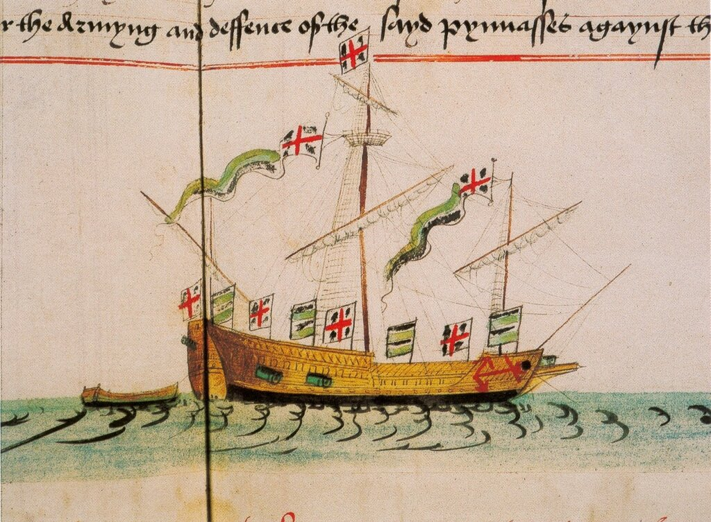
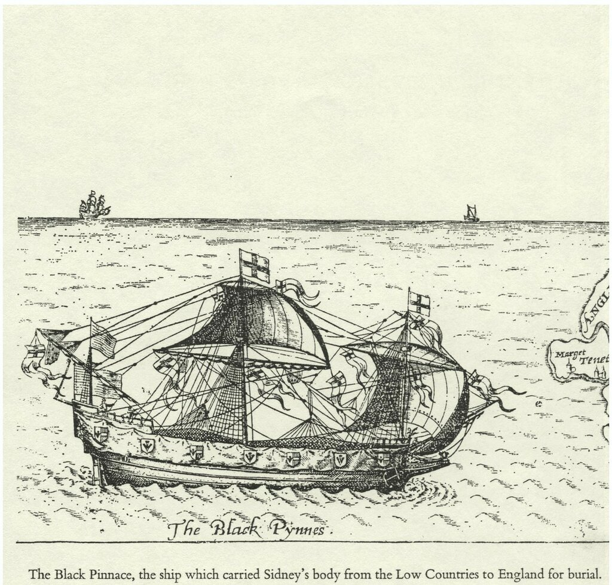
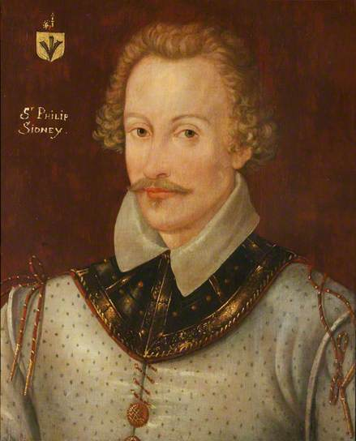

Как и фрегат, термин пинас в английском флоте использовался довольно свободно. Список Энтони (Anthony roll, 1546) включал десять пинасов: четыре имели водоизмещение 80 тонн, четыре – 40 тонн, Trego-Ronnyger – 20 тонн, и Hare – 15 тонн. Если быть педантичным, то первую группу этих кораблей можно без натяжек назвать пинасами, вторую - бригантинами, а третью – фрегатами.

Пинас Falcon. Anthony roll, 1546
Наличие пинасов в английском флоте не ограничивалось лишь приведенными в списке Энтони кораблями. Создается впечатление, что именно пинасы водоизмещением 30-40 тонн шли на замену гребным баржам, к тому времени выводимым из состава военного флота. Постепенно они сформировали новый класс кораблей. К 1586 году в строй были введены Advice, Charles, Makeshift, Moon, Seven Stars, Spy и Sun. Их грузоподъемность составляла от 39 до 70 тонн. Самый большой имел в длину по килю чуть больше 19 м (63 фута) и в ширину около 5 м (16 футов). Экипаж был 30-45 человек, вооружение – 7-10 сакр, пятифунтовых миньонов, и фальконетов. Самые маленькие из пинасов, видимо, лишь незначительно отличались от фрегатов. Так, участвовавший в походе Дрейка 12-тонный Benedict в одном случае называли пинасом, а в другом – фрегатом. Иногда на корабль брали «полуфабрикаты» пинасов, состоящие из четырех частей, что позволяло быстро собрать их в одно плавсредство в случае необходимости. Во время третьего путешествия Мартина Фробишера в 1578 году такой пинас размещался на борту Anne Francis.
Небольшая ширина пинасов не позволяла размещать тяжелую артиллерию вдоль бортов, поэтому самое тяжелое орудие, как и на галерах, находилось в носовой части корабля. Численность экипажей пинасов, которую мы можем установить на основе сохранившихся документов, вполне удовлетворяла «правилу Адэра», приведенному в предыдущем рассказе, поэтому без натяжки пинасы можно отнести к типу галер.
Обычный, казалось бы, корабль, но есть в нем какая-то чертовщинка, enigma, как пишет морской историк Tom Glasgow Jnr. Сэр Ричард Хоукинс в своих мемуарах (R. Hawkins, Observations in his Voyage into the South Sea ed. J.A. Williamson, 1933) пишет, что главной задачей для пинаса было
«обслуживать флот, в спокойную погоду, в случае необходимости, организовывать погоню за кораблями противника (на веслах), становиться на якорь в тех местах у побережья, куда более крупные суда не могут попасть из-за угрозы сесть на мель».
Пинасы встречаются в описаниях почти всех крупных путешествий той эпохи, исполняя роль рабочих лошадок при крупных кораблях: разведка, связь, снабжение, высадка десантов – все это было задачей пинасов. Наиболее крупные суда этого типа включались под собственными именами в списки флота, более мелкие просто придавались большим кораблям как баркасы, шлюпки и другие мелкие плавсредства.
Наиболее известным в истории представителем пинасов является так называемый «Черный Пинас», корабль, на котором в 1586 году из Нидерландов в Англию было доставлено тело павшего в битве при Зютфене молодого английского поэта Филипа Сидни (Philip Sidney).

"Черный пинас". Гравюра Томаса Ланта, 16-й век. Фрагмент. Частная коллекция

Филип Сидни. National Trust, Knole
Вернемся к пинасам. Термин этот пришел к англичанам скорее всего от испанцев, где он появился впервые в XIII веке. Мы уже писали о кантигах короля Кастилии и Леона Альфонса X (1252-1284) и помещали миниатюры из этих песен. Так вот, когда идет перечисление кораблей флота (7 loi, tit. 2З): « Carraca, Nao, Galera, Fusta, Balener, Leno, Pinaça, Caravela, e otros barcos. » , между леньо (leños) и каравеллами (сaravelas) помещено небольшое маневренное судно пинас (pinaça). Затем это судно появляется у португальцев в 1326 году под тем же названием. К англичанам и французам этот тип корабля переходит под названиями spinace, spinas, spynes (Англия, XV век) и espinace (Франция, 1451), espinasse. Лексикографы той поры объясняли происхождение названия от латинского pinus, pino, pin – сосна, и считали, что именно применением сосны для изготовления этого судна определяется и его название. Так, П.Фурнье в своем словаре (Inventaire des mots, etc., 1643) пишет:
« Pinasses sont petits vaisseaux longs, estroits, forts et légers, propres à faire course ou descendre du monde en vue coste : ils sont faits de pin pour l'ordi¬naire.»
«Пинасы – маленькие, длинные, узкие, крепкие и легкие суда, предназначенные для крейсирования в прибрежных водах; они обычно изготавливаются из сосны»
Это мнение о происхождении названия «пинас» перекочевало и в русскую литературу. Так Боголюбов в своей «Истории корабля» пишет:
ПИНАСЫ, СПИНАСЫ, (Spinnaces, pinaces). Шарнрокъ, сравнивая ихъ съ рамбергами, говоритъ, что они ходили подъ парусами и на веслахъ и принадлежали къ разряду фрегатовъ, употреблявшихся въ Средиземномъ морѣ. Обинъ (Aubin) пишетъ, что это были небольшія суда Бискайскаго залива, имѣвшія не круглую, a плоскую корму, длинныя и узкія, a потому легкія на ходу вооружались тремя мачтами, имѣли три паруса, но ходили и на веслахъ.
Въ XVII в. подъ именемъ пинасъ извѣстны были Голландскія суда въ 134 ф. длиною, но не имѣли никакого сходства съ пенишами. Происхожденіе слова пениша французское, отъ pinasse; оно взято отъ Испанскаго pinaza, a это слово происходитъ отъ pino — породы дерева, изъ котораго строились y Испанцевъ эти суда. По инымъ свѣдѣніям пинасами назывались небольшія шлюбки, вмѣщавшія до 25 человѣкъ. Ихъ употребляли для разсылокъ вездѣ, гдѣ требовалось скорое исполненіе порученія.
(с. 164-165)
Однако здесь не все так однозначно, и появление форм с начальными esp-, sp- заводит дело в тупик. Еще одна загадка в происхождении названий кораблей, которую вряд ли удастся разрешить.